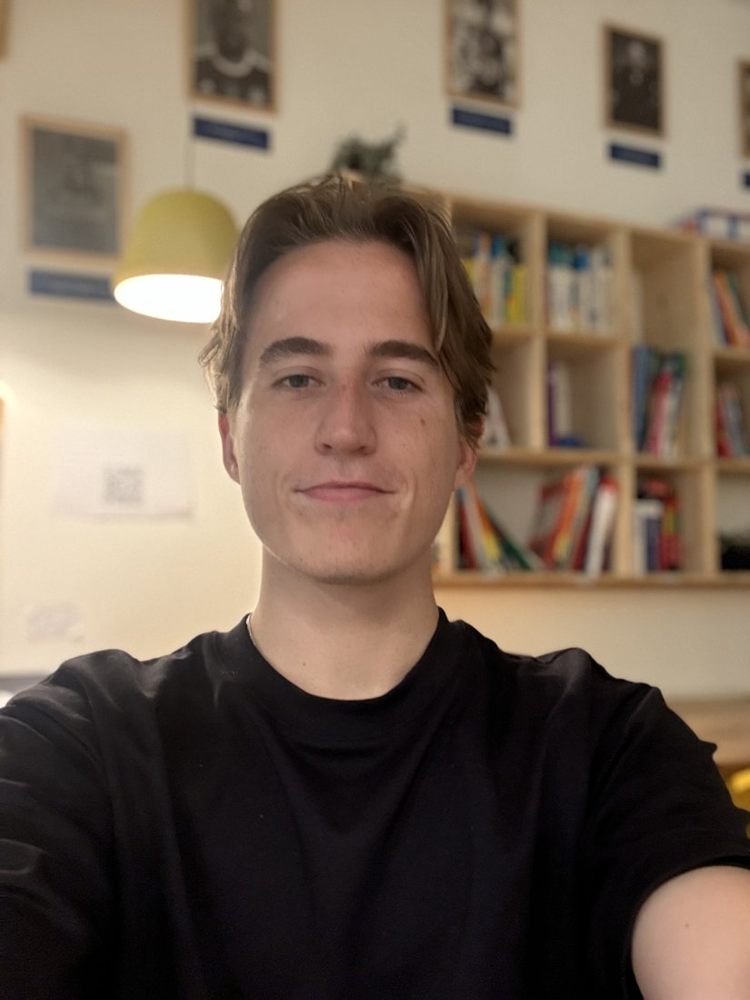

M2 Data Science at École Polytechnique. I work on generative models, LLMs and optimization. Heading for a PhD.
I come from HPC. I ended up in generative AI by building things that had to run on real hardware, with real VRAM limits.
Right now I'm mostly into LLMs as a whole: how they're trained, how they reason, how to make them reliable. I also spent a lot of time on diffusion models, and I like optimization, optimal transport and RL.
Long term goal: research. Ideally at a lab like Anthropic.
Fully local diffusion pipeline to insert vehicles into real road scenes. Perspective estimation, road detection, LoRA on Z-Image-Turbo, COCO annotations out. Built to train detection models.
Qwen3.8-27B running on-prem to rewrite generation prompts. Two-pass scheduling to avoid model reload ping-pong under tight VRAM.
Side project. Predicting price moves of CS2 cases and skins from market history. Started with cases, the most liquid items.
Custom ComfyUI node package to chain prompts and run batch video generation overnight without babysitting.
Small interactive toys. Everything runs in your browser.
Drag t. Watch the data turn into a Gaussian.
Click anywhere to drop a starting point.
Generative models, NLP & LLMs, optimization, RL, deep learning.
Local diffusion pipeline for synthetic image generation. LoRA, ControlNet, segmentation and depth models, local LLM, containerized on multi-GPU servers.
600+ hours teaching advanced maths and intro to ML. Also on the tech side.